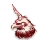
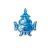
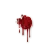
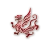
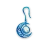
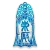

夜晚行动顺序一览
来自钟楼百科
由于华灯初上发布后，现有的在线魔典和剧本的功能正在调整中，因此在这里列出包含所有现有官方角色和华灯初上角色的夜晚顺序总表，方便玩家查询。
注：部分官方角色的顺序相对原本的顺序有所调整，针对部分角色的顺序进行了优化。说书人在查询夜晚顺序表时，可以自行选择依照原本的夜晚顺序表的顺序执行角色行动，或是按此处推荐的顺序执行角色行动。针对做出了顺序变化的角色，会以备注的形式说明调整的原因。
没有匹配项，请调整关键词或搜索范围。
首个夜晚
01 黄昏：检查所有玩家是否闭上眼睛。部分旅行者、传奇角色和奇遇角色会在这时行动。（官员、窃贼、学徒、咖啡师）
堤丰之首：将位于堤丰之首两侧的对应数量的玩家变成邪恶的爪牙，并分别唤醒他们通知他们的角色和阵营变化。
亡魂：从现在开始，亡魂可以在夜晚睁眼。每当你要在夜晚唤醒一名邪恶玩家时，先唤醒亡魂。当你让这名邪恶玩家重新入睡时，也让亡魂入睡。
科学怪人：（分别或同时）唤醒科学怪人和恶魔，通知他们恶魔因为科学怪人而获得的善良角色的能力。
失忆者：决定失忆者的能力，并根据具体能力决定是否需要唤醒失忆者、何时唤醒、唤醒后让他做出什么操作或得知什么信息。（调整理由：根据失忆者的能力，失忆者的夜晚顺序会相应地进行调整。因此，将失忆者放在夜晚顺序的最开始部分，以便提醒说书人在此时决定失忆者的唤醒时机，并在当晚的合适时机下唤醒失忆者并令其进行行动。）
哲学家：唤醒哲学家，他可以摇头不使用能力，或选择获得角色列表上的一个善良角色的能力。
炼金术士：唤醒炼金术士，对他展示他获得的能力所对应的爪牙角色标记。
罂粟种植者：如果罂粟种植者在场，跳过今晚的爪牙信息与恶魔信息环节中互相认识的部分。
魔术师：如果魔术师在场，则需要对爪牙信息环节和恶魔信息环节的相关内容进行调整。（添加理由：在爪牙信息开始前添加魔术师的行动顺序，用以提醒说书人在提供给爪牙和恶魔信息时，不要出错。因为魔术师与罂粟种植者同属对首夜邪恶信息的干扰，因此将魔术师的行动放在了这里。）
遗忘之门：如果遗忘之门加入游戏，跳过爪牙信息和恶魔信息环节。
爪牙信息：如果有七名或更多玩家，唤醒所有爪牙：展示“他是恶魔”信息标记。指向恶魔。如果下方的其他对爪牙暴露的角色在场，不要让爪牙入睡，而是一并给出相关信息后再让爪牙入睡。
告密者：如果告密者在场，对爪牙展示三个不在场的善良角色标记。
落难少女：如果落难少女在场，对爪牙展示落难少女角色标记。（调整理由：原本的落难少女行动顺序只涉及到巡山人相关，而巡山人的夜晚行动中本身已经提示了说书人需要对落难少女进行角色变更和唤醒操作，故原本的落难少女行动提示略显累赘。因为落难少女本身具有对爪牙的暴露能力，因此将其首夜行动调整到这里，并删除其他夜晚行动，同时也可以对“暴露角色”相关能力解释优化以便于理解。）
召唤师：唤醒召唤师，对他展示三个不在场的善良角色标记。
疯子：唤醒疯子并向他提供恶魔信息。如可能，则让疯子进行相应的恶魔行动。随后在恶魔信息环节对恶魔提供疯子的相关信息。
恶魔信息：如果有七名或更多玩家，唤醒恶魔：展示“他们是你的爪牙”信息标记。指向所有爪牙。展示“这些角色不在场”信息标记。展示三个不在场的善良角色。如果其他对恶魔暴露的角色在场，不要让恶魔入睡，而是一并给出相关信息后再让恶魔入睡。
国王：如果国王在场，对恶魔展示国王角色标记并指向国王玩家。
提线木偶：如果提线木偶在场，对恶魔展示提线木偶角色标记并指向提线木偶玩家。（调整理由：与疯子和国王同属暴露给恶魔的角色，因此调整顺序使得说书人方便一次性向恶魔展示所有信息。）
掮客：唤醒掮客，让他选择两名玩家，如果这两名玩家阵营相同，放置“熟客”标记。
水手：唤醒水手，让他选择一名玩家。决定他俩其中谁因为水手能力醉酒。
工程师：唤醒工程师，他可以摇头不使用能力，或选择角色列表上的恶魔或爪牙角色，来执行同角色类型的这些玩家的角色变化。
传教士：唤醒传教士，让他选择一名玩家。如果他选中了爪牙，该爪牙失去能力。在传教士入睡后通知该爪牙被传教士选中。
画皮：唤醒画皮，让他攻击一名存活玩家，该玩家变成活尸。
投毒者：唤醒投毒者，让他选择一名玩家，那名玩家中毒。
寡妇：唤醒寡妇，让她查看魔典。在她查看完毕后让她选择一名玩家，那名玩家中毒。随后如果寡妇未醉酒中毒，唤醒一名善良玩家，对他展示寡妇角色标记。

蛊雕：唤醒蛊雕，他可以摇头不改变方向，或点头改变方向。随后，对蛊雕展示被放置“蛊毒”提示标记玩家的角色标记。
侍臣：唤醒侍臣，他可以摇头不使用能力，或选择角色列表上的一个任意角色，该角色对应的玩家之一醉酒。
舞蛇人：唤醒舞蛇人，让他选择一名存活玩家。如果选中恶魔则执行角色和阵营的交换，并在舞蛇人入睡后通知旧恶魔角色变化。
教父：唤醒教父，对他展示外来者角色标记，告诉他有哪些外来者在场。
街头风琴手：让街头风琴手选择自己是否醉酒。如果他点头，标记街头风琴手醉酒。
魔鬼代言人：唤醒魔鬼代言人，让他选择一名玩家，那名玩家处决不死。
镜像双子：分别独自唤醒镜像双子和对立双子，告知他们由于镜像双子能力而得知的信息。
女巫：唤醒女巫，让她选择一名玩家，那名玩家被诅咒。
洗脑师：唤醒洗脑师，让他选择一名玩家和角色列表上的一个善良角色，那名玩家明天需要“疯狂”证明自己是那个角色。在洗脑师入睡后通知那名玩家被洗脑。
恐惧之灵：唤醒恐惧之灵，让他选择一名玩家，随后通知所有玩家恐惧之灵选择了一名玩家。
鹰身女妖：唤醒鹰身女妖，让她选择两名玩家，第一名玩家明天需要“疯狂”证明第二名玩家邪恶。在鹰身女妖入睡后通知第一名玩家被鹰身女妖选中。
狐媚娘：唤醒狐媚娘，让她选择一名玩家。在狐媚娘入睡后通知那名玩家狐媚娘在场。
酿酒师：唤醒酿酒师，让他选择角色列表上的一个镇民角色并让他给出信息。
熊孩子：唤醒熊孩子，让他选择角色列表上的一个镇民角色，该角色会产生错误信息。
小精灵：唤醒小精灵，对他展示一个在场镇民角色标记。
巡山人：唤醒巡山人，他可以摇头不使用能力，或选择一名玩家。如果巡山人选中了落难少女，则在巡山人入睡后通知落难少女角色变化。
洗衣妇：唤醒洗衣妇，对她指向两名玩家，并展示一个镇民角色标记。这两名玩家其中之一是这个镇民。
图书管理员：唤醒图书管理员，对他指向两名玩家，并展示一个外来者角色标记。这两名玩家其中之一是这个外来者。
调查员：唤醒调查员，对他指向两名玩家，并展示一个爪牙角色标记。这两名玩家其中之一是这个爪牙。
厨师：唤醒厨师，对他用手势比划数字来告知他邻座邪恶玩家有几对。
共情者：唤醒共情者，对他用手势比划数字来告知他与他邻近的存活玩家中有几人是邪恶玩家。
占卜师：唤醒占卜师，让他选择两名玩家。以点头或摇头告知他是否选中了恶魔。
管家：唤醒管家，让他选择一名除自己以外的玩家，那名玩家成为他的主人。
逆臣：唤醒逆臣，让他选择一名除自己以外的玩家，那名玩家现在与他不共戴天。
祖母：唤醒祖母，对她指向一名善良玩家，并展示该玩家的角色标记。
钟表匠：唤醒钟表匠，对他用手势比划数字来告知他恶魔与爪牙之间的最近距离。
筑梦师：唤醒筑梦师，让他选择一名除自己以外的非旅行者玩家。对他展示一善一恶两个角色标记。
女裁缝：唤醒女裁缝，她可以摇头不使用能力，或选择除自己以外的两名玩家。以点头或摇头告知她选择的玩家是否为同一阵营。
贵族：唤醒贵族，对他指向三名玩家。这三名玩家中有且仅有一名是邪恶玩家。
阴阳师：唤醒阴阳师，对他展示两个善良角色和两个邪恶角色。
郎中：唤醒郎中，让他指向一名玩家。对郎中展示一个与该玩家能力相关的词语。

方士：唤醒方士，让他选择一个数字。如果他选择了当晚对应的数字，向他展示对应数量在场的角色标记。
修行者：唤醒修行者，对他指向对应方向来告知他最近的邪恶玩家的方向。
钦天监：唤醒钦天监，对他指向对应方向来告知他最近的邪恶玩家的方向。
赏金猎人：（在进入首个夜晚时立即通知赏金猎人转变的那个镇民他的阵营发生了变化）唤醒赏金猎人，对他指向一名邪恶玩家。
守夜人：唤醒守夜人，他可以摇头不使用能力，或选择一名玩家。如果守夜人选择了玩家，则在守夜人入睡后通知那名玩家谁是守夜人。
异教领袖：如果异教领袖的阵营发生了变化，将他唤醒并通知他最新阵营。
食人魔：唤醒食人魔，让他选择一名玩家。如果他选择了邪恶玩家，将他的角色标记在魔典中倒置以表示他转变为邪恶阵营。
侍女：唤醒侍女，让她选择两名除自己以外的存活玩家。用手势比划数字来告知她这些玩家中因自己能力而唤醒的玩家数量。
引路人：唤醒引路人，让他选择一至三名除自己以外的玩家，以点头或摇头告知他选择的玩家中是否有玩家在当晚被邪恶玩家的能力选择或影响过。
数学家：唤醒数学家，用手势比划数字来告诉他今天有多少玩家的能力未正常生效。
利维坦：如果利维坦在场，告知所有人利维坦在场，现在是第一个白天。
其他夜晚
0102 亡魂：从现在开始，亡魂可以在夜晚睁眼。每当你要在夜晚唤醒一名邪恶玩家时，先唤醒亡魂。当你让这名邪恶玩家重新入睡时，也让亡魂入睡。
失忆者：根据失忆者的具体能力决定是否需要唤醒失忆者、何时唤醒、唤醒后让他做出什么操作或得知什么信息。（调整理由：与首夜相同，根据失忆者的能力，失忆者的夜晚顺序会相应地进行调整。）
哲学家：如果哲学家未曾使用能力，唤醒哲学家，他可以摇头不使用能力，或选择获得角色列表上的一个善良角色的能力。
帽匠：如果帽匠死于白天，（建议分别）唤醒恶魔和爪牙并让他们选择是否改变角色。如果帽匠死于夜晚，则在当前玩家行动结束后立即开始茶会。
罂粟种植者：如果罂粟种植者死于白天，插入执行爪牙信息和恶魔信息（不包含恶魔伪装）流程。如果罂粟种植者死于夜晚，则在当前玩家行动结束后立即执行相关流程。
掮客：唤醒掮客，让他选择两名玩家，如果这两名玩家阵营相同，放置“熟客”标记。
水手：唤醒水手，让他选择一名玩家。决定他俩其中谁因为水手能力醉酒。
工程师：如果工程师未曾使用能力，唤醒工程师，他可以摇头不使用能力，或选择角色列表上的恶魔或爪牙角色，来执行同角色类型的这些玩家的角色变化。
传教士：唤醒传教士，让他选择一名玩家。如果他选中了爪牙，该爪牙失去能力。在传教士入睡后通知该爪牙被传教士选中。
麻脸巫婆：唤醒麻脸巫婆，让她选择一名玩家和角色列表上的一个角色。如果该角色不在场，则在麻脸巫婆入睡后通知该玩家角色变化。根据实际情况，可以将相关通知合并，例如玩家变成了恶魔，则在恶魔行动时一并唤醒，通知角色变化并让他执行相应行动。（调整理由：使得麻脸巫婆在创造出任意爪牙时，都能够在当晚能够立即行动，避免与原本比麻脸巫婆先行动的角色在参与麻脸巫婆的变化时，会有一天的时间不具有任何能力，从而导致非良性互动。请注意：即使麻脸巫婆的顺序改变，她的能力造成死亡的时机仍然需要等到首个能够造成死亡的恶魔角色行动之前。）
投毒者：唤醒投毒者，让他选择一名玩家，那名玩家中毒。
孟婆：唤醒孟婆，他可以摇头不使用能力，或选择一名存活玩家。
蛊雕：如果蛊雕未改变过方向，唤醒蛊雕，他可以摇头不改变方向，或点头改变方向。随后，对蛊雕展示被放置“蛊毒”提示标记玩家的角色标记。
旅店老板：唤醒旅店老板，让他选择两名玩家。这两名玩家今晚不死，同时需要决定他俩其中谁因为旅店老板能力醉酒。
侍臣：如果侍臣未曾使用能力，唤醒侍臣，他可以摇头不使用能力，或选择角色列表上的一个任意角色，该角色对应的玩家之一醉酒。
打更人：唤醒打更人，让他进行猜测，并放置提示标记到对应玩家旁。
锦衣卫：唤醒锦衣卫，让他选择一名玩家。他现在开始保护那名玩家。
狸猫：唤醒狸猫，让他选择一名玩家。如果这名玩家是善良角色且在当晚被邪恶角色能力杀死，狸猫与他交换角色。
巡察：唤醒巡察，让他选择角色列表上的两个善良角色的图标。如果对应的两名玩家都存活，他们今晚不死。
赌徒：唤醒赌徒，让他进行猜测。如果猜测错误，他死亡。
杂技演员：唤醒杂技演员，让他选择一名玩家。如果当晚这名玩家醉酒或中毒，杂技演员死亡。
舞蛇人：唤醒舞蛇人，让他选择一名存活玩家。如果选中恶魔则执行角色和阵营的交换，并在舞蛇人入睡后通知旧恶魔角色变化。
僧侣：唤醒僧侣，让他选择除自己以外的一名玩家，那名玩家今晚免受恶魔负面效果影响。
酿酒师：唤醒酿酒师，让他选择角色列表上的一个镇民角色并让他给出信息。
熊孩子：唤醒熊孩子，让他选择角色列表上的一个镇民角色，该角色会产生错误信息。
街头风琴手：让街头风琴手选择自己是否醉酒。如果他点头，标记街头风琴手醉酒。如果他摇头，移除街头风琴手的醉酒标记。
魔鬼代言人：唤醒魔鬼代言人，让他选择一名与上一晚不同的玩家，那名玩家处决不死。
女巫：唤醒女巫，让她选择一名玩家，那名玩家被诅咒。
洗脑师：唤醒洗脑师，让他选择一名玩家和角色列表上的一个善良角色，那名玩家明天需要“疯狂”证明自己是那个角色。在洗脑师入睡后通知那名玩家被洗脑。
恐惧之灵：唤醒恐惧之灵，让他选择一名玩家，随后如果恐惧之灵的目标发生了变更，通知所有玩家恐惧之灵选择了一名玩家。
鹰身女妖：唤醒鹰身女妖，让她选择两名玩家，第一名玩家明天需要“疯狂”证明第二名玩家邪恶。在鹰身女妖入睡后通知第一名玩家被鹰身女妖选中。
灵言师：如果首次有善良玩家说出了灵言师的关键词，唤醒该玩家并通知他阵营变化。
狐媚娘：如果狐媚娘死于处决，唤醒她选择的玩家并通知他阵营变化。
逆臣：如果逆臣或他的目标玩家，这两人之一死于处决，唤醒另一名玩家并通知他阵营变化。
入殓师：如果入殓师的能力曾被触发，唤醒他并告知他变成了哪个恶魔角色。
红唇女郎：如果红唇女郎的能力曾被触发，唤醒她并告知她变成了哪个恶魔角色。
召唤师：如果这是游戏中的第三个夜晚，唤醒召唤师，让他选择一名玩家和一个恶魔角色，那名玩家变成由他选择的邪恶恶魔。
疯子：如果疯子以为的恶魔会在当晚行动，唤醒疯子，并让他以恶魔的方式行动。
驱魔人：唤醒驱魔人，让他选择一名与上一晚不同的玩家。如果他选中了恶魔，则在驱魔人入睡后通知该恶魔谁是驱魔人。
半兽人：唤醒半兽人，让他选择一名玩家。如果该玩家是善良玩家，该玩家死亡，且当晚恶魔不会造成死亡。
公主：如果公主在今天白天提名并处决了一名玩家，当晚恶魔不会造成死亡。
小恶魔：唤醒小恶魔，让他攻击一名玩家。如果他成功自杀，则在他入睡后通知一名爪牙角色变化。
僵怖：如果白天无人死亡，唤醒僵怖，让他攻击一名玩家。
普卡：唤醒普卡，让他选择一名玩家，该玩家中毒。上一个被普卡中毒的玩家死亡。
沙巴洛斯：决定上一夜被沙巴洛斯选择的玩家是否被反刍。然后唤醒沙巴洛斯，让他攻击两名玩家。

珀：唤醒珀，他可以攻击一名玩家或不进行攻击，如果他上一次选择了不进行攻击，则此次必须攻击三名玩家。
方古：唤醒方古，让他攻击一名玩家。如果该玩家是外来者并成功转化，则方古死亡，在他入睡后通知那名外来者角色变化。
奥赫：唤醒奥赫，让他选择角色列表上的一个角色。该角色对应的玩家死亡，如果该角色不在场，替奥赫决定今晚谁会因为奥赫能力死亡。
小怪宝：唤醒所有爪牙选择由谁照看小怪宝。随后，决定今晚谁会因为小怪宝能力死亡。
牙噶巴卜：根据已放置的提示标记数量，选择最多等同于该数量的玩家死亡。该夜晚行动只是一个提示，死亡的造成时机可以是白天，也可以是夜晚的任何时候。

穷奇：唤醒穷奇，让他攻击一名玩家。如果今天白天有外来者死亡，他攻击并杀死的玩家成为活尸，随后决定今晚谁会因为穷奇能力死亡。
饕餮：唤醒饕餮，让他选择任意数量的非旅行者玩家或一名旅行者玩家。如果这些玩家角色类型不同，他们死亡。
暴君：唤醒暴君，让他攻击一名玩家。如果他杀死了与爪牙邻近的玩家，那么他下个夜晚可以攻击最多两名玩家。
奸佞：唤醒奸佞，让他攻击一名玩家。随后，唤醒被标记“爪牙死亡”的玩家，让他攻击一名玩家。
典狱长：唤醒典狱长，让他选择至多三名玩家。根据上个夜晚被典狱长选择的玩家中是否有玩家死于处决来决定谁死亡。
书生：如果恶魔猜中了书生，让恶魔选择一名玩家，该玩家死亡。
刺客：如果刺客未曾使用能力，唤醒刺客，他可以摇头不使用能力，或选择攻击一名玩家。
教父：如果今天白天有外来者死亡，唤醒教父，让他攻击一名玩家。
歌伶：如果歌伶今天白天使用了自己的能力且恶魔成为了观众，歌伶死亡。
鸩：如果鸩未曾使用能力，唤醒鸩，他可以摇头不使用能力，或选择一个镇民角色。
造谣者：如果造谣者今天白天的声明正确，一名玩家死亡。（调整理由：会造成死亡的能力效果，放在死亡触发能力效果之前，避免错过了死亡触发能力的最终提示时机。注：根据规则，死亡触发能力的夜晚顺序并不重要，仅作为能力遗漏触发时的提示，下同。）
修补匠：在夜晚的任意时机，你都可以决定杀死修补匠。这里只是一个提示以免遗忘修补匠。（调整理由：会造成死亡的能力效果，放在死亡触发能力效果之前，避免错过了死亡触发能力的最终提示时机。）

月之子：如果月之子在今天白天的时候使用自己的能力选择了一名善良玩家，那名玩家死亡。（调整理由：会造成死亡的能力效果，放在死亡触发能力效果之前，避免错过了死亡触发能力的最终提示时机。）
祖母：如果恶魔杀死了孙子，祖母死亡。（调整理由：为“由死亡触发能力”而触发的死亡效果，顺序提前到所有其他死亡触发能力之前。）
遗忘之门：如果遗忘之门加入游戏，今晚有玩家死亡，向他展示“你是”信息标记，他的角色标记和阵营。
理发师：如果理发师死于白天，唤醒恶魔让他决定是否使用理发师的能力。如果理发师死于夜晚，（如果让除攻击理发师以外的恶魔进行选择则需要等当前恶魔入睡后）让一名恶魔决定是否使用理发师的能力。
守鸦人：如果守鸦人死于夜晚，唤醒守鸦人，让他选择一名玩家。对他展示这名玩家的角色标记。

秉笔：如果秉笔在白天死亡，唤醒秉笔，对他指向一名善良玩家；如果秉笔在夜晚死亡，唤醒秉笔，对他指向一名邪恶玩家。
瘟疫医生：如果瘟疫医生死亡，说书人获得一项爪牙能力。
唱诗男孩：如果恶魔杀死了国王，唤醒唱诗男孩，对他指向恶魔。
农夫：如果农夫死于夜晚，唤醒一名存活的善良玩家告知他角色变化。
报丧女妖：如果恶魔杀死了报丧女妖，宣布“报丧女妖觉醒了”，并使用“具有能力”标记报丧女妖。
教授：如果教授未曾使用能力且在城镇广场上有玩家死亡，唤醒教授，他可以摇头不使用能力，或选择一名已死亡的玩家。如果该玩家是镇民，该玩家被起死回生。
巡山人：如果巡山人未曾使用能力，唤醒巡山人，他可以摇头不使用能力，或选择一名玩家。如果巡山人选中了落难少女，则在巡山人入睡后通知落难少女角色变化。
信息类角色行动开始：如果是一项首夜会获取信息的能力，且在游戏中途由于角色变化或获得能力而导致该能力需要在非首夜触发，则该能力会在此时被触发。如果有多项能力在同一个夜晚被触发，则由说书人来决定这些能力的触发顺序。
共情者：唤醒共情者，对他用手势比划数字来告知他与他邻近的存活玩家中有几人是邪恶玩家。
占卜师：唤醒占卜师，让他选择两名玩家。以点头或摇头告知他是否选中了恶魔。
管家：唤醒管家，让他选择一名除自己以外的玩家，那名玩家成为他的主人。
送葬者：如果今天白天有玩家死于处决，唤醒送葬者，对他展示那名玩家的角色标记。
提刑官：如果今天白天提刑官发起过提名，唤醒提刑官，对他展示那名玩家的角色标记。
筑梦师：唤醒筑梦师，让他选择一名除自己以外的非旅行者玩家。对他展示一善一恶两个角色标记。
城镇公告员：唤醒城镇公告员，以点头或摇头告知他今天白天是否有爪牙发起提名。
神谕者：唤醒神谕者，对他用手势比划数字来告知他当前死亡玩家中邪恶玩家的数量。
女裁缝：如果女裁缝未曾使用能力，唤醒女裁缝，她可以摇头不使用能力，或选择除自己以外的两名玩家。以点头或摇头告知她选择的玩家是否为同一阵营。
杂耍艺人：如果杂耍艺人在今天白天使用了能力，唤醒杂耍艺人，对他用手势比划数字来告知他白天猜测正确的次数。
气球驾驶员：唤醒气球驾驶员，对他指向一名玩家，这名玩家与之前气球驾驶员得知过的玩家属于不同的角色类型。
郎中：唤醒郎中，让他指向一名玩家。对郎中展示一个与该玩家能力相关的词语。
村夫：唤醒村夫，让他指向一名玩家，用手势告诉他那名玩家的阵营。
方士：在对应数字的夜晚，唤醒方士，向他展示对应数量在场的角色标记。
驿使：如果驿使进行了宣称，唤醒驿使。如果驿使被标记“是”，点头告知是；如果驿使被标记“否”，摇头告知否。
国王：如果满足国王的唤醒条件，唤醒国王，对他展示一个存活的角色标记。
赏金猎人：如果赏金猎人之前得知的玩家死亡，唤醒赏金猎人，对他指向一名新的邪恶玩家。
守夜人：如果守夜人未曾使用能力，唤醒守夜人，他可以摇头不使用能力，或选择一名玩家。如果守夜人选择了玩家，则在守夜人入睡后通知那名玩家谁是守夜人。
异教领袖：如果异教领袖的阵营发生了变化，将他唤醒并通知他最新阵营。
侍女：唤醒侍女，让她选择两名除自己以外的存活玩家。用手势比划数字来告知她这些玩家中因自己能力而唤醒的玩家数量。
引路人：唤醒引路人，让他选择一至三名除自己以外的玩家，以点头或摇头告知他选择的玩家中是否有玩家在当晚被邪恶玩家的能力选择或影响过。
数学家：唤醒数学家，用手势比划数字来告诉他今天有多少玩家的能力未正常生效。
暴乱：如果这是游戏中的第三个夜晚，唤醒爪牙告知他们角色变化。
黎明：等待数秒。让所有玩家睁眼。宣布黄昏存活但现在死亡的玩家死亡，宣布黄昏死亡但现在存活的玩家复活。
利维坦：如果利维坦在场，告知所有人利维坦在场，现在是第几个白天。（如果玩家一致同意，则无需在已经知晓利维坦在场的前提下在其他夜晚执行此项操作。）
同步于 2026-09-18T21:37:36Z ｜ 修订 6510 ｜
查看原页面